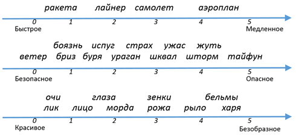
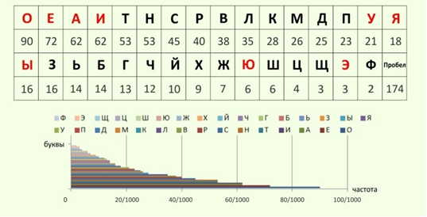
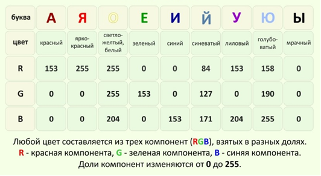
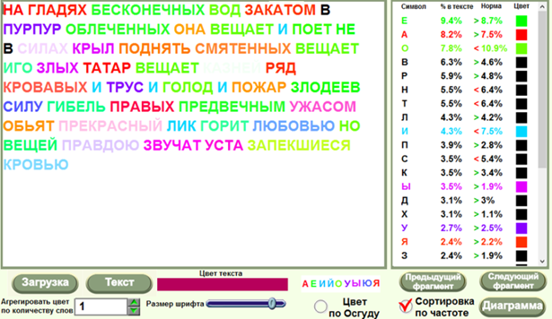
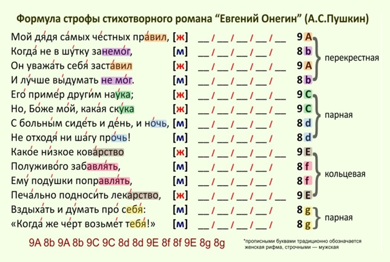
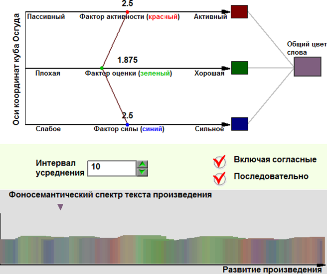

|
Лекция 54.
| ||||||||||||||||||||||||||||||||||||||||||||||||||||||||||||||||||||||||||||||||||||||||||||||||||||||||||||||||||||||||||||||||||||||||||||||||||||||||||||||
| Испытуемое слово «Дом» | 1 – очень плохо | 2 - плохо | 3 - нейтрально | 4 - хорошо | 5 - отлично | Итого: |
|---|---|---|---|---|---|---|
| Количество голосов | 0 | 4 | 6 | 20 | 70 | 100 человек |
| Количество набранных баллов | 1 * 0 = 0 | 2 *4 = 8 | 3 * 6 = 18 | 4 * 20 = 80 | 5 * 70 = 350 | 456 баллов |
Средний балл, набранный словом «дом», равен 4.56.
Далее также проверили слова: дворец, строение, постройка, хижина, хибара, халупа и каждое слово получило свою оценку, отличную от других. После нанесения набранных баллов на отрезок [1,5] шкалы «плохо-хорошо», слова упорядочились, причем также как их бы упорядочил обычный человек. Но сейчас измерения были сделаны объективно. Центральная предельная теорема говорит, что чем больше экспериментов, тем точнее средний результат – «сумма случайных величин есть величина неслучайная». Этот же результат повторялся и в других аудиториях, то есть он объективен и закономерен.
Осгуд со студенческой аудиторией измерил множество разных слов. Использовались шкалы: «плохо-хорошо», «маленькое-большое», «женское-мужское», всего испытали 75 шкал. Точность различения слов была более чем достаточна: 575=2.6*1052. Притом, что грамотный человек знает около 80 000 слов.
Далее надо было найти базовые шкалы, через которые могут быть описаны остальные. Их оказалось три: шкала оценки (хорошее-плохое), шкала силы (сильное-слабое), шкала активности (активное-пассивное). При необходимости добавлялась четвертая шкала родокомфортности (мягкое-твердое). Каждое слово имело, таким образом, три свойства. Например, «друг»=(1.85, 0, 1.84)=(хорошее, сильное, активное).
| Признак | Шкала оценки | Шкала силы | Шкала активности |
|---|---|---|---|
| Свойство | Хорошее (1) – плохое (5) | Сильное (1) – слабое (5) | Активный (1) – пассивный (5) |
| Друг | 1 | 2 | 1 |
| Бандит | 5 | 1.5 | 1 |
| Цветок | 1 | 4 | 5 |
| Грязь | 5 | 3.8 | 5 |
| Хулиган | 4.5 | 2 | 1 |
Если обозначить слова точками по их координатам в кубе Осгуда, построенном на трёх взаимно перпендикулярных шкалах, то все понятия разойдутся по своим окрестностям, а все близкие понятия окажутся рядом. Плотно, в кластерах, расположились точки с близким ореолом, таким образом были найдены классы, и была проведена классификация.
Если построить сортировочную машину, то слова в ней будут распределяться по группам по сходству ореола. Машина Осгуда осуществляет важнейшую операцию ИИ - «сходство и различие». 3 шкалы соответствуют трём ярусам в дереве. Если каждая вершина дерева разводит слова по трём группам, то в итоге все множество слов разделится на 27 групп. Чтобы разделить все 6 миллионов слов словаря русского языка, достаточно 4 шкалы и вычисления положения слова на шкале [1…5] с точностью до 0.1. Для 80 000 слов, чтобы разделить их по группам по 20 слов в каждой, достаточно четырёх шкал с 10 отсчётами на каждой.
Интересно складывается судьба исследования. Иногда оно замирает на несколько десятков лет, потому что исследователь, обнаружив какое-то интересное явление, не представляет себе, что надо делать дальше. Взгляните на этапы технологии мышления (тема 20). Следующий этап – операции со знаками, потом соединение выражений в законы и закономерности, которые нужны для решения задач и извлечения пользы.
Теория Осгуда тоже дождалась нового шага в своём развития, который сделал Юрий Орлов.
В древности человек не имел настолько развитого мозга, чтобы различать тысячи понятий, и такого развитого речевого аппарата, чтобы отчетливо обозначить их все в своей речи. Сообщить, о событии можно было, подражая звукам природы. Так и осталось в нашей речи: камыш-ш-ш, грохот, скрести. Орлов предположил, что между звучанием и значением слова есть связь.
Как звучит слово, то оно и обозначает. А как иначе древнему человеку было объяснить соплеменникам, что он был в камышах, – только подражая их шуршанию.
Однако связь должна быть выражена причинно-следственным отношением, формулой. ИИ лучший инструмент для вывода такой закономерности. И такая формула была выведена.
На рисунке уже формула Орлова, а не эксперты, расставила слова по шкалам. И слова в кубе Орлова совпали с положением слов в кубе Осгуда. Гипотеза Орлова блестяще подтвердилась.

Орлов, понимая, что в речи первичны звуки, а слова, измеренные Осгудом, состоят из звуков, вывел операциями (сложить, умножить, разделить) свойства слов из свойств звуков. Значение имеют как сами звуки (элементы), так и их связи в словах (системе). Теперь надо было измерить как элементы, так и связи.
Если попросить группу из ста человек проголосовать: какого цвета каждый звук, то быстро выяснится, что звук А – красного цвета (Red), Е – зелёного (Green), И – синего (Blue). О – белый (White), а как известно, белый цвет есть смесь всех цветов. Смешивая в определённых пропорциях R,G,B-цвета, можно получить любой цвет (например, жёлтый). Звук О соответствует силе оттенков, примешиваясь к А,Е,И. Например, «А+О» соответствует смеси красного цвета буквы А и белого цвета буквы О. Выражение «k1*А + k2*О» или «k1*R + k2*W» образует оттенки розового цвета в зависимости от значений весовых коэффициентов k1 и k2.
Неслучайно, название цвета крА’сный ассоциируется со звуком А, зЕлЁ’ный – с Е, сИ’нИЙ – с И.
Интересно и неслучайно, что RGB-сигнал образуют самые распространённые звуки русского языка – О, А, Е, И. Смешивая эти звуки в разных пропорциях в словах, предложениях, текстовых сообщениях, можно придавать произведениям цветовой окрас, настроение. Например, если звук А употребляется в произведении чаще, чем 116 раз на 1000 знаков, то текст приобретает красный оттенок. Чем чаще употребляется звук, тем больше соответствующая составляющая цвета в RGB-сигнале.
Задания
- Загрузите с сайта упражнение «Модель цвета». Меняя вес (от 0 до 255) каждого из трёх чистых базовых цветов (красный, зелёный, синий) в составе нового цвета, добейтесь получения разных сложных цветов. Сколько цветов вы устойчиво различаете? Сколько слов, обозначающих цвета вам известно?
- Посмотрите на модель цвета в упражнении «Цветовая модель МКО». Какие основные характеристики описывают цвет? Как смешиваются цвета? Как рассчитать получение нового сложного цвета алгебраически? Что такое чистый цвет?
Например, слово «зима» имеет красно-синий оттенок, «лето» - салатовый. Анализ по формуле Орлова показывает, что имя Андрей – активное, сильное, красивое, Ольга – нежное, светлое, сильное, величественное, Юля – тоненькая, невысокая, подвижная. С помощью фоносемантики можно решить задачу прогноза, что будут представлять себе люди, услышав новое для себя слово или название товара: робот – большое, мужское, огромное, могучее, подвижное; незич – маленькое, нежное; фрыш – грубое, плохое, страшное; вробар – сильное, грубое, страшное.
Упражнение 8
Талантливое произведение всегда оказывает на нас какое-то воздействие. От одних стихов мы грустим и плачем, под другие – с удовольствием маршируем.
Звучание языка и структура произведения, которые оказывают на нас эмоциональное воздействие и побуждают к действиям, определены моделью.
Чтобы установить эмоцию, которая может быть закодирована цветом, достаточно вычислить по ЗВУЧАНИЮ текста цвет произведения.


Согласно теории фоносемантики относительное количество каждого звука в тексте произведения определяет относительную долю соответствующего цвета в общем цвете произведения.
Рассмотрим стихотворение А. Блока «Гамаюн, птица вещая».
На гладях бесконечных вод,
Закатом в пурпур облечённых,
Она вещает и поёт,
Не в силах крыл поднять смятённых.
Вещает иго злых татар,
Вещает казней ряд кровавых,
И трус, и голод, и пожар,
Злодеев силу, гибель правых...
Предвечным ужасом объят,
Прекрасный лик горит любовью,
Но вещей правдою звучат
Уста, запёкшиеся кровью!...
Прочитайте вслух стихотворение, интуитивно определите его цвет. Большинство субъектов определяют цвет стихотворения как темно-красный с примесью коричневого, цвета запёкшейся крови. Однако, определим теперь цвет формально, методом фоносемантики.
Общее количество звуков N в этом произведении 315. Ученые Ю.М. Орлов и А.П. Журавлёв предложили правила подсчета звуков, отвечающих за цвет.
| Красный, ярко-красный |
Белый, жёлтый | Жёлтый, зелёный | Синий | Лиловый | Чёрный, коричневый | |
| Звук | А+Я | О+0.5Ё | Е+0.5Ё | И+0.5Й | У+Ю | Ы |
- Ударные звуки, как более важные, учитываются в сумме с коэффициентом 2.
- Первый звук в слове, как более важный, учитывается в сумме с коэффициентом 4.
- Слова записываются звуками, а не буквами. Например, «яблоко»-«йаблако», «окно»-«акно».
Тексты технического содержания обычно эмоционального звучания не имеют, поэтому дают при анализе серый цвет. Талантливые литературные произведения, имеющие цель воздействовать на психику и на действия читателя, демонстрируют хорошо выраженный цвет эмоции (красный, синий, зелёный, чёрный, белый и т.д.). Чем талантливее произведение, тем чище его цвет. Поэтому для анализа талантливых произведений можно пренебречь рядом перечисленных правил, что, конечно, привнесёт определённую долю ошибки в расчёт (обычно в диапазоне 5% - 10%), но в целом всё равно всё прекрасно сработает.
В нашем расчёте для простоты будет учтено только правило 1.
Например, строка «нА’ глА’дЯх бесконе’чных во’д» даёт 5 баллов для звуков «А+Я» красного и ярко-красного цвета: 2 («А» под ударением с коэффициентом 2) + 1 («Я»). Аналогично производится подсчёт по всем словам и строкам текста и по всем значимым звукам. Для расчёта силы цвета использованы следующие формулы модели Орлова-Журавлева.
Формула частоты встречающейся буквы (звука): \(p_i = {n_i \over N},\) где pi– частота i–той буквы (звука) в тексте, ni – количество соответствующих букв (звуков) в тексте, N – общее число букв (звуков) в тексте. Формула нормативного разброса значения нормативной частоты звука в русской речи согласно центральной предельной теореме в теории вероятностей: \(\delta_i = \sqrt{{p_{in}*(1-p_{in})}\over N}\), где δi– стандартное отклонение (дисперсия), p_in – норма частоты i-той буквы (звука), значения которых рассчитаны по словарю русского языка и используются всеми как константы. Формула расчёта силы цвета: \({a_i} = {p_i - p_{in}}\over {\delta_i}\) На рисунке и в таблице представлены результаты проведённых расчётов.

| Количество букв: N= 315 | ||||||
|---|---|---|---|---|---|---|
| Буква (звук) |
Количество букв (звуков) |
Частота букв (звуков) |
Норма частоты | Разброс | Сила цвета | Цвет |
| ni | \({p_i} = {n_i\over N}\) | pin | \(= \sqrt{{p_{in}*(1-p_{in})}\over N}\) | \({a_i} = {{p_i - p_{in}}\over \delta_i} \) | ||
| А + Я | 46 | 0.146 | 0.116 | 0.018 | 1.67 | Ярко-красный |
| О+0.5Ё | 27 | 0.086 | 0.126 | 0.019 | -2.11 | Белый, жёлтый |
| Е+0.5Ё | 29 | 0.092 | 0.102 | 0.017 | -0.58 | Жёлтый, зелёный |
| И+0.5Й | 22.5 | 0.071 | 0.077 | 0.015 | -0.4 | Синий |
| У+Ю | 14 | 0.44 | 0.40 | 0.011 | 0.36 | Лиловый |
| Ы | 11 | 0.035 | 0.024 | 0.009 | 1.22 | Чёрный, коричневый |
Как видно, Блок изъял из произведения звуки, соответствующие белым, жёлтым, зелёным, синим цветам. А насытил стихотворение красным, чёрным, коричневым, лиловым цветом. В результате смесь цветов произведения находится в пропорции: «красный: лиловый: черный = 1.67 : 0.36 : 1.22».
Следует заметить, что вычисленный цвет совпадает с субъективно ожидаемым цветом.
В чем состоит «магия» таланта поэта и «магия» формул искусственного интеллекта?
Прочтите строчку «вещА’ет кА’зней рЯ’д кровА’вый» - звуки под ударением выделены. Количество звуков А и Я (дополнительно для усиления впечатления стоящих под ударением) превышает норму в обычной речи. Поэт интуитивно, пытаясь передать своё впечатление читателю, искусственно насыщает стихотворение красными и чёрными оттенками.
Стихотворение С. Есенина «Отговорила роща золотая» насыщено зелёными светлыми тонами за счет звуков О и Е: «ОтгОвОрила рОща зОлОтая». Стихотворение М. Лермонтова «Белеет парус одинокий» насыщено голубыми и синими оттенками за счет звука И.
Вспомните у Маяковского:
Поэзия — та же добыча радия.
В грамм добыча, в годы труды.
Изводишь единого слова ради
Тысячи тонн словесной руды.
Но как испепеляюще слов этих жжение
Рядом с тлением слова-сырца.
Эти слова приводят в движение
Тысячи лет миллионов сердца.
Поэт тщательно подбирает нужные ему слова и в эмоциональном, и в смысловом плане.
Разумеется, есть ещё множество законов, которые надо соблюсти на каждом уровне языка, – в этом сложность написания талантливых текстов. «Магия» искусственного интеллекта состоит в опоре на статистические данные в изучении сложных явлений и прежде всего на формулу центральной предельной теоремы.
Ниже приведена формализованная модель произведения «Евгений Онегин» А.С. Пушкина и пример реализации модели выделенного закона рифмы.

небесный паспорт мерный стук
мороз маститый мимо лает
носил гарем подвижный жук
покой товарный знает страшный
читал отсталый шар зубастый
покрытый славой стук достал
любил страдать чудной скандал
заставил срок ручной очкастый
отсталый знает лучший мрак
к удаче взвел курок контракт
не видно смысл порою красный
подвижный носит разный бук
второй народ достал но вдруг
Задания
- Определите цвет одного из произведений: С. Михалков «Гимн Российской Федерации», С. Есенин «Отговорила роща золотая», М. Лермонтов «Белеет парус одинокий» или любого другого произведения на свой вкус. Примечание. Выбирать следует текст талантливого автора. Расчёт вести аккуратно, понимая, что смешение цветов отдельных частей большого произведения даёт серый грязный цвет. Диапазон усреднения цвета по звукам следует принимать осмысленно.
- Просчитайте цвета стихотворений нескольких авторов. По чистоте цвета определите уровень талантливости авторов. Составьте рейтинг авторов.
- Загрузите с сайта упражнение «Стихоплет». Задайте ритмический шаблон стиха. Подключите базу слов. Посмотрите на результат.
- Загрузите с сайта упражнение «Цветовая динамика произведения». Проследите изменение цвета по ходу развития сюжета. Найдите самые яркие всплески. Прочитайте соответствующую часть произведения. Какие выводы можно сделать из этого?
- Проследите, как меняется график количества слов от длины слова у одного автора с течением развития его творчества. Можно ли отличить произведения одного автора от произведений другого на основании вида такого графика?
- Найдите точки золотого сечения в выбранном вами произведении. Исследуйте, есть ли связь между цветом этой части произведения и местоположением точек золотого сечения. Что такое золотое сечение и как его найти в художественных произведениях посмотрите в упражнениях «Золотое сечение».
- Попробуйте изобрести формулу Орлова для связи тона ноты и цвета. Проверьте её на нескольких известных музыкальных произведениях.
- Посмотрите, какие эмоции ассоциируются с названиями известных брендов. Что означает ваше имя и фамилия?
- Всё, что вращается, колеблется, вибрирует, может быть сопоставлено с волной определённой частоты, а, значит, с цветом, имеющим определённую частоту волны. Попробуйте изобразить цветом работу какого-нибудь механизма.
- Проанализируйте на частоту самых употребляемых слов трёх речей Президента РФ В.В. Путина разных лет.
- Проанализируйте речи Трампа, Си Цзиньпина, Путина по частоте употребляемых ими слов на сходство и различие основных смыслов и главных тезисов.
Теория фоносемантики дала возможность автоматически анализировать композицию произведений компьютерным способом, настроение в которых меняется по ходу развития сюжета. В этом случае открывается возможность исследовать цветовой спектр произведения и по его изменению судить о перипетиях сюжета, а также о его ключевых точках.

Частотный метод и метод фоносемантики уже неоднократно применяли историки для выявления скрытых отношений в дипломатических текстах. Например, анализ текстов выступлений дипломатов на Генуэзской конференции 1922 года, когда РСФСР удалось достичь значительных успехов в установлении связей с западным миром, показал истинное отношение к нашей стране отдельных стран и дипломатов.
Метод совместно с электроэнцефалограммой применяется в Японии для анализа процессов, происходящих в подсознании человека. Метод используется для выбора названий новых изделий, поступающих впервые в широкую продажу для создания соответствующего им имиджа, в судмедэкспертизе для определения тяжести нанесённого вербального оскорбления.
Метод фоносемантики применяется для синтеза текстов, управляющих эмоциями, психикой и действиями субъектов. Ассоциация шкал Осгуда представлена в таблице.
| Цвет | Синий | Красный | Зеленый |
|---|---|---|---|
| Ось Осгуда и диапазон свойств | Сила (слабый - сильный) |
Активность (пассивный - активный) |
Оценка (плохой – хороший) |
| Теория социодинамики | Запас, резерв, состояние | Моторика, скорость, поток | Критичность, направление, импульс |
| Звук | И | А+Я | Е |
| Отношение | Природа (неЯ, неМы) | Я | Общество (Мы) |
| Психическая составляющая | Могу | Хочу | Надо |
| Модальность | Возможно, потенциал | Достаточно, экстенциал | Необходимо, интенциал |
| Процесс | Развитие природных способностей | Научение знаниям и умениям с учетом психических особенностей | Воспитание психологических черт |

Презентация:
| Лекция 53. Модели языка и языковых сообщений. Алгоритмы анализа языковых сообщений | Заключение. Над чем сейчас интересно поработать? | ||||||||||||||||
|
|||||||||||||||||